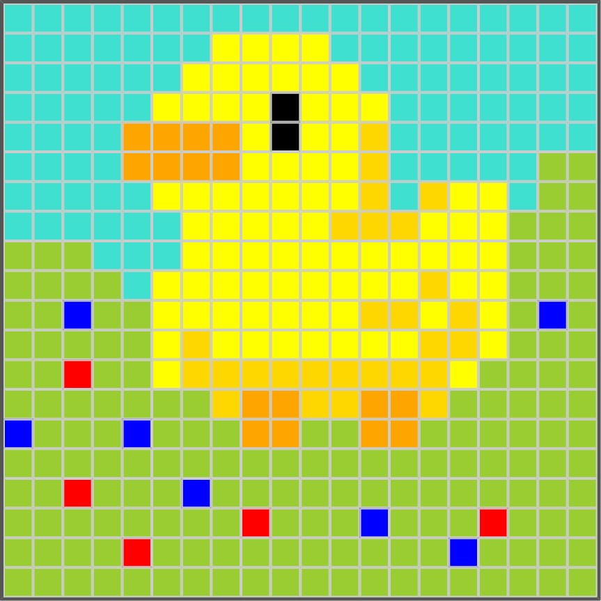

Oiê! Só lembrando que você está lendo a versão acessível da documentação do site PIXEL ART - COLORINDO COM QUADRADOS. Caso deseje ver a versão normal, clique aqui documentacao_pt-br.pdf e você será redirecionado para o PDF.
Visão Geral
O Pixel Art - Colorindo com Quadrados é uma aplicação web interativa para uso em sala de aula, com o objetivo de ensinar o PC (Pensamento Computacional) de forma lúdica e visual. O projeto surgiu como resposta à falta de infraestrutura em muitas escolas públicas municipais, onde não há computadores suficientes para uso simultâneo. A aplicação é simples e acessível, ideal para os anos iniciais do Ensino Fundamental. Ela permite que os estudantes criem suas próprias artes — ou desenvolvam propostas sugeridas pelos docentes — em uma grade de 20x20 quadrados, utilizando uma paleta de cores disponível.
Alguns desenhos feito na aplicação
![A imagem mostra um panda
estilizado em pixel art, formado por pequenos quadrados em uma grade.
O panda está representado de forma minimalista, com cores limitadas —
principalmente preto e branco. A cabeça é grande e arredondada, com
orelhas pretas nas extremidades superiores. Os olhos são destacados
por manchas pretas ovais, com um pequeno nariz preto centralizado. A
parte inferior da imagem mostra o corpo do panda, mais estreito que a
cabeça, também em preto. Apesar da simplicidade, os traços são
suficientes para identificar claramente o animal como um panda.](assets/images/pandinha.png) Pandinha
Pandinha
![A imagem apresenta uma cena
alegre ao ar livre, desenhada em estilo pixel art. No centro, há
uma pessoa com pele clara, cabelo vermelho e camiseta azul,
sorrindo. Os olhos são pretos e o formato do rosto é simples e
arredondado. Ao fundo, o céu é azul claro com nuvens brancas
espalhadas. No canto superior direito, há um sol amarelo brilhante.
À direita da pessoa, uma árvore verde com pontos vermelhos —
possivelmente frutas — e tronco marrom completa o cenário. A
composição transmite uma atmosfera leve e divertida, com cores
vibrantes e traços minimalistas.](assets/images/por-ai.png) Por Aí
Por Aí

Pato FelizObjetivos Educacionais
- Estimular o raciocínio lógico e a sequência de instruções;
- Trabalhar conceitos de coordenadas, laços de repetição e eventos;
- Promover a criatividade e a expressão artística;
- Introduzir noções de interação com interfaces digitais;
- Incentivar a acessibilidade digital com suporte a leitores de tela e LIBRAS.
Pensamento Computacional Aplicado
- Decomposição: entender a imagem como um conjunto de pixels;
- Reconhecimento de padrões: criar formas e simetrias;
- Abstração: representar objetos reais com formas simples;
- Algoritmos: sequência de ações para colorir e limpar a grade.
Funcionalidades
- Seleção de cor: paleta com 30+ cores nomeadas;
- Colorir pixels: clique ou arraste para pintar;
- Limpar tudo: apaga o desenho atual;
- Cores aleatórias: gera mosaico divertido;
- Salvar desenho: exportar como imagem PNG;
- Coordenadas visuais: eixo X (A-T) e Y (1-20);
- Acessibilidade: aria-label, audiodescrição e integração com VLibras.
Responsividade
- Layout adaptado para dispositivos móveis;
- Imagens e botões redimensionáveis;
- Empilhamento automático de elementos no mobile.
Tecnologias Utilizadas
- HTML5 e CSS3;
- JavaScript Vanilla;
- Font Awesome;
- html2canvas;
- VLibras.
Exemplos de uso em sala de aula
- Criar um desenho com coordenadas específicas;
- Desafiar os alunos a codificar padrões (ex: bandeiras, emojis);
- Trabalhar com algoritmos visuais (ex.: preencher linha, coluna, diagonal).
Público-alvo
- Alunos do Ensino Fundamental;
- Professores de Informática, Matemática e Artes;
- Educadores que trabalham com inclusão digital.